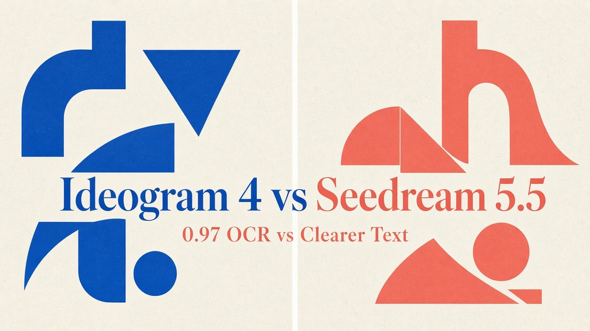
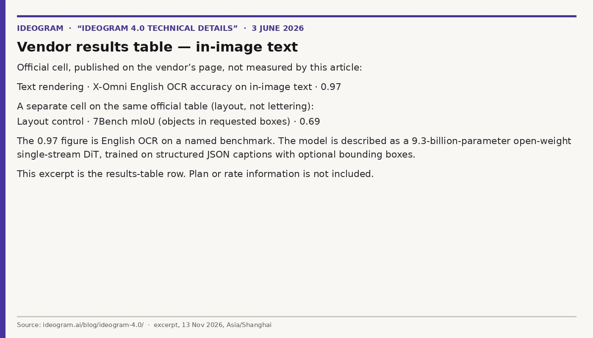

Ideogram 4 Hits 0.97 OCR vs Seedream 5.5's Clearer Text

Ideogram 4 hits 0.97 English OCR on its own official table; Seedream 5.5 ships clearer text, including complex character shapes and densely arranged small type. Both treat on-image lettering as a headline capability, and they publish different kinds of evidence. Ideogram 4's technical post of 3 June 2026 puts that 0.97, on the X-Omni benchmark, on a vendor results table. Seedream 5.5, launched 9 November, describes the upgrade as significant and reports “leading results in text structure.” Those two statements sit side by side, and they already tell you which tool fits which job.
Key Takeaways
- Ideogram 4's lettering claim is a vendor benchmark number. The official technical post describes a 9.3-billion-parameter open-weight DiT, 34 layers, trained on structured JSON captions with optional bounding boxes and palettes, and reports 0.97 on X-Omni English OCR accuracy for in-image text. Layout control is a separate cell, 0.69 mIoU on 7Bench — whether objects sit in requested boxes, not whether letters can be read. The 0.97 is English OCR, on a named bench, published by the vendor.
- Seedream 5.5's lettering claim is a qualitative official upgrade. The 9 November Seed post lists “more realistic images and clearer text” as the third of three upgrades. It says text rendering “improves significantly,” including complex character shapes and dense small type, and reports “leading results in text structure and text-to-image realism” against “other major models.”
- The only recent third-party text pass in this window passed everyone who sat it. CHOOSETO.AI, on 10 November, gave four models a café menu in English and Spanish, 49 words, and reported that all four got it right, including Seedream 5.5. Ideogram 4 was not in that four. A ceiling-effect pass is a compliment to the field, and it does not pick a winner in this pair.
- The models are different tools. Ideogram 4 is a text-to-image model with declared layout control. Seedream 5.5 is an image model whose launch emphasizes multi-turn editing and then, third, realism and type. A poster specified in JSON, and a poster that has to survive twenty rounds of edits, are not the same job.
- The Ideogram 4 workspace this article links runs Ideogram 4. Ideogram 4.5, released 30 September as an edit-first model, is a separate SKU. Seedream 5.5 is the current Seedream flagship; 5.0 Pro appears only in cited test rows.
Ideogram 4 vs Seedream 5.5 at a Glance
| Dimension | Ideogram 4 | Seedream 5.5 | Source |
|---|---|---|---|
| Developer | Ideogram | ByteDance Seed | Official posts |
| Release | 3 June 2026 | 9 November 2026 | Official posts |
| What the model is | 9.3B open-weight single-stream DiT, 34 layers; JSON prompts, optional boxes and palettes | Image creation and multi-turn editing; native RGBA; realism and type as a third upgrade | Ideogram technical post; Seed blog |
| On-image text, official evidence | 0.97 X-Omni English OCR, on the vendor table; layout 0.69 mIoU on 7Bench | “Clearer text”; “complex character shapes and densely arranged small text”; vendor “leading results in text structure” | Same |
| CHOOSETO café menu, 10 November | Not in the four-model set | Reported correct, with three other models, on 49 words | CHOOSETO.AI |
| Related SKU, not this comparison | Ideogram 4.5, an edit-first model, 30 September | Seedream 5.0 Pro appears only in cited test rows, not as a rival here | Official pages; CHOOSETO |
Ideogram 4 Seedream 5.5
---------- ------------
vendor OCR: 0.97 X-Omni (English) official wording: clearer text,
JSON layout, optional bounding dense small type, complex shapes
boxes; layout 0.69 mIoU 100-round editing and native RGBATwo Official Stories About Type
Ideogram 4's June post is a model card in essay form: a 34-layer single-stream DiT, prompts parsed as JSON and validated against a schema, and a text-rendering cell of 0.97, defined as X-Omni English OCR accuracy on in-image text. Layout control is a separate cell, 0.69 mIoU on 7Bench. The 0.97 is English, which is the language that cell actually measures, and the natural sweet spot for a poster or a logo whose letters have to be read.
Seedream 5.5's November post is a launch announcement. The first two upgrades — 100-round editing and native RGBA — have drawn most of the week's commentary. The third is the one that belongs here: lighting and materials described as more natural, and text described as significantly improved, including complex character shapes and densely arranged small text. “Leading results in text structure and text-to-image realism” is Seed's evaluation against “other major models.” Put next to Ideogram's 0.97, it is a different kind of official evidence: a qualitative upgrade on a model whose first job is to keep editing the same still.
What a Recent Test Showed
CHOOSETO.AI's 10 November video is mainly a 15-edit drift test. In a side task, a café menu in English and Spanish, 49 words, all four models were reported correct. If four models all pass, the task is at a ceiling; Ideogram 4 was not one of the four, so the pass is a data point for Seedream 5.5's lettering and not a ranking of this pair.
Quantslant and Voyager, in this window, wrote about Ideogram 4.5's repeated-edit behavior and about 4.5 versus 4.0 on posters. Those pieces are about a different SKU, or a choice inside Ideogram's own line. They stay off this comparison.
Which One Should You Use?
Choose Ideogram 4 if:
- You need a declared layout path — JSON, optional bounding boxes, a palette — and you want the vendor's 0.97 English OCR figure in view as a published number.
- You are generating a poster or a logo as a new image, rather than revising an already approved still for the twentieth time.
- English lettering is the main deliverable, which is the language the X-Omni cell on the official table actually measures.
Choose Seedream 5.5 if:
- The job is a still you already have, and the next work is a round of edits that has to leave the rest of the picture alone. That is the first official upgrade, and lettering sits inside that same multi-turn story.
- You care about the 9 November wording on complex character shapes and dense small type — the official description of how 5.5 handles difficult lettering.
- Native RGBA, the second official upgrade, is part of the same delivery.
The decision is about the job: specified layout and a published English OCR cell on one side, multi-turn editing and a qualitative type upgrade on the other. The linked workspace runs Ideogram 4, which is the model with the 0.97 on the table.

Source: Ideogram, “Ideogram 4.0 Technical Details”, 3 June 2026, the text-rendering row on the official results table (X-Omni English OCR, 0.97). The crop is that table; it does not include plan or rate information.